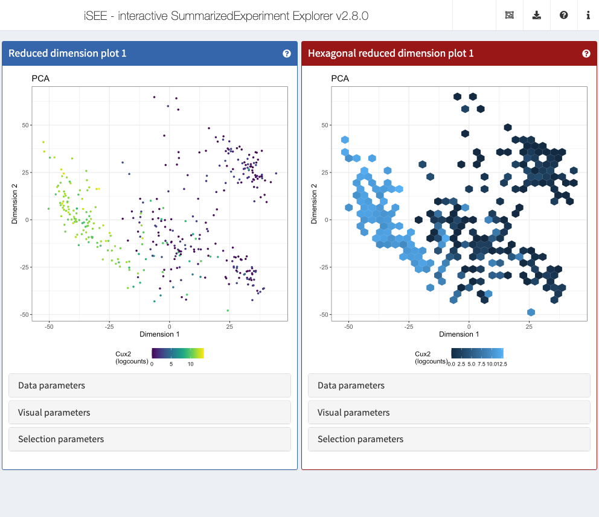

vignettes/iSEEhex.Rmd
iSEEhex.RmdThe iSEE package
(Rue-Albrecht et al. 2018) provides a
general and flexible framework for interactively exploring
SummarizedExperiment objects. However, in many cases, more
specialized panels are required for effective visualization of specific
data types. The iSEEhex
package implements panels summarising data points in hexagonal bins,
that work directly in the iSEE application and can smoothly
interact with other panels.
We first load in the package:
All the panels described in this document can be deployed by simply
passing them into the iSEE() function via the
initial= argument, as shown in the following examples.
Let us prepare an example SingleCellExperiment object.
library(scRNAseq)
# Example data ----
sce <- ReprocessedAllenData(assays="tophat_counts")
class(sce)## [1] "SingleCellExperiment"
## attr(,"package")
## [1] "SingleCellExperiment"
library(scater)
sce <- logNormCounts(sce, exprs_values="tophat_counts")
sce <- runPCA(sce, ncomponents=4)
sce <- runTSNE(sce)
rowData(sce)$ave_count <- rowMeans(assay(sce, "tophat_counts"))
rowData(sce)$n_cells <- rowSums(assay(sce, "tophat_counts") > 0)
sce## class: SingleCellExperiment
## dim: 20816 379
## metadata(2): SuppInfo which_qc
## assays(2): tophat_counts logcounts
## rownames(20816): 0610007P14Rik 0610009B22Rik ... Zzef1 Zzz3
## rowData names(2): ave_count n_cells
## colnames(379): SRR2140028 SRR2140022 ... SRR2139341 SRR2139336
## colData names(23): NREADS NALIGNED ... passes_qc_checks_s sizeFactor
## reducedDimNames(2): PCA TSNE
## mainExpName: endogenous
## altExpNames(1): ERCCThen, we create an iSEE app
that compares the ReducedDimensionHexPlot panel – defined
in this package – to the standard ReducedDimensionPlot
defined in the iSEE
package.
initialPanels <- list(
ReducedDimensionPlot(
ColorBy = "Feature name", ColorByFeatureName = "Cux2", PanelWidth = 6L),
ReducedDimensionHexPlot(
ColorBy = "Feature name", ColorByFeatureName = "Cux2", PanelWidth = 6L,
BinResolution = 30)
)
app <- iSEE(se = sce, initial = initialPanels)
## R version 4.1.3 (2022-03-10)
## Platform: x86_64-pc-linux-gnu (64-bit)
## Running under: Ubuntu 20.04.4 LTS
##
## Matrix products: default
## BLAS/LAPACK: /usr/lib/x86_64-linux-gnu/openblas-pthread/libopenblasp-r0.3.8.so
##
## locale:
## [1] LC_CTYPE=en_US.UTF-8 LC_NUMERIC=C
## [3] LC_TIME=en_US.UTF-8 LC_COLLATE=en_US.UTF-8
## [5] LC_MONETARY=en_US.UTF-8 LC_MESSAGES=en_US.UTF-8
## [7] LC_PAPER=en_US.UTF-8 LC_NAME=C
## [9] LC_ADDRESS=C LC_TELEPHONE=C
## [11] LC_MEASUREMENT=en_US.UTF-8 LC_IDENTIFICATION=C
##
## attached base packages:
## [1] stats4 stats graphics grDevices utils datasets methods
## [8] base
##
## other attached packages:
## [1] scater_1.22.0 ggplot2_3.3.6
## [3] scuttle_1.4.0 scRNAseq_2.8.0
## [5] iSEEhex_0.99.0 iSEE_2.6.0
## [7] SingleCellExperiment_1.16.0 SummarizedExperiment_1.24.0
## [9] Biobase_2.54.0 GenomicRanges_1.46.1
## [11] GenomeInfoDb_1.30.1 IRanges_2.28.0
## [13] S4Vectors_0.32.4 BiocGenerics_0.40.0
## [15] MatrixGenerics_1.6.0 matrixStats_0.62.0
## [17] BiocStyle_2.22.0
##
## loaded via a namespace (and not attached):
## [1] utf8_1.2.2 shinydashboard_0.7.2
## [3] tidyselect_1.1.2 RSQLite_2.2.14
## [5] AnnotationDbi_1.56.2 htmlwidgets_1.5.4
## [7] grid_4.1.3 BiocParallel_1.28.3
## [9] Rtsne_0.16 munsell_0.5.0
## [11] ScaledMatrix_1.2.0 codetools_0.2-18
## [13] ragg_1.2.2 DT_0.23
## [15] miniUI_0.1.1.1 withr_2.5.0
## [17] colorspace_2.0-3 filelock_1.0.2
## [19] highr_0.9 knitr_1.39
## [21] shinyWidgets_0.7.0 GenomeInfoDbData_1.2.7
## [23] bit64_4.0.5 rprojroot_2.0.3
## [25] vctrs_0.4.1 generics_0.1.2
## [27] xfun_0.31 BiocFileCache_2.2.1
## [29] R6_2.5.1 doParallel_1.0.17
## [31] ggbeeswarm_0.6.0 clue_0.3-61
## [33] rsvd_1.0.5 AnnotationFilter_1.18.0
## [35] bitops_1.0-7 cachem_1.0.6
## [37] shinyAce_0.4.2 DelayedArray_0.20.0
## [39] assertthat_0.2.1 promises_1.2.0.1
## [41] BiocIO_1.4.0 scales_1.2.0
## [43] beeswarm_0.4.0 gtable_0.3.0
## [45] beachmat_2.10.0 ensembldb_2.18.4
## [47] rlang_1.0.2 systemfonts_1.0.4
## [49] GlobalOptions_0.1.2 splines_4.1.3
## [51] rtracklayer_1.54.0 lazyeval_0.2.2
## [53] hexbin_1.28.2 BiocManager_1.30.18
## [55] yaml_2.3.5 GenomicFeatures_1.46.5
## [57] httpuv_1.6.5 tools_4.1.3
## [59] bookdown_0.26 ellipsis_0.3.2
## [61] jquerylib_0.1.4 RColorBrewer_1.1-3
## [63] Rcpp_1.0.8.3 sparseMatrixStats_1.6.0
## [65] progress_1.2.2 zlibbioc_1.40.0
## [67] purrr_0.3.4 RCurl_1.98-1.6
## [69] prettyunits_1.1.1 GetoptLong_1.0.5
## [71] viridis_0.6.2 fontawesome_0.2.2
## [73] ggrepel_0.9.1 cluster_2.1.3
## [75] fs_1.5.2 magrittr_2.0.3
## [77] circlize_0.4.15 colourpicker_1.1.1
## [79] ProtGenerics_1.26.0 hms_1.1.1
## [81] shinyjs_2.1.0 mime_0.12
## [83] evaluate_0.15 xtable_1.8-4
## [85] XML_3.99-0.9 gridExtra_2.3
## [87] shape_1.4.6 compiler_4.1.3
## [89] biomaRt_2.50.3 tibble_3.1.7
## [91] crayon_1.5.1 htmltools_0.5.2
## [93] mgcv_1.8-40 later_1.3.0
## [95] DBI_1.1.2 ExperimentHub_2.2.1
## [97] dbplyr_2.1.1 ComplexHeatmap_2.10.0
## [99] rappdirs_0.3.3 Matrix_1.4-1
## [101] cli_3.3.0 parallel_4.1.3
## [103] igraph_1.3.1 pkgconfig_2.0.3
## [105] pkgdown_2.0.3 GenomicAlignments_1.30.0
## [107] xml2_1.3.3 foreach_1.5.2
## [109] vipor_0.4.5 bslib_0.3.1
## [111] XVector_0.34.0 stringr_1.4.0
## [113] digest_0.6.29 Biostrings_2.62.0
## [115] rmarkdown_2.14 rintrojs_0.3.0
## [117] DelayedMatrixStats_1.16.0 restfulr_0.0.13
## [119] curl_4.3.2 shiny_1.7.1
## [121] Rsamtools_2.10.0 rjson_0.2.21
## [123] lifecycle_1.0.1 nlme_3.1-157
## [125] jsonlite_1.8.0 BiocNeighbors_1.12.0
## [127] desc_1.4.1 viridisLite_0.4.0
## [129] fansi_1.0.3 pillar_1.7.0
## [131] lattice_0.20-45 KEGGREST_1.34.0
## [133] fastmap_1.1.0 httr_1.4.3
## [135] interactiveDisplayBase_1.32.0 glue_1.6.2
## [137] png_0.1-7 iterators_1.0.14
## [139] BiocVersion_3.14.0 bit_4.0.4
## [141] stringi_1.7.6 sass_0.4.1
## [143] blob_1.2.3 textshaping_0.3.6
## [145] BiocSingular_1.10.0 AnnotationHub_3.2.2
## [147] memoise_2.0.1 dplyr_1.0.9
## [149] irlba_2.3.5